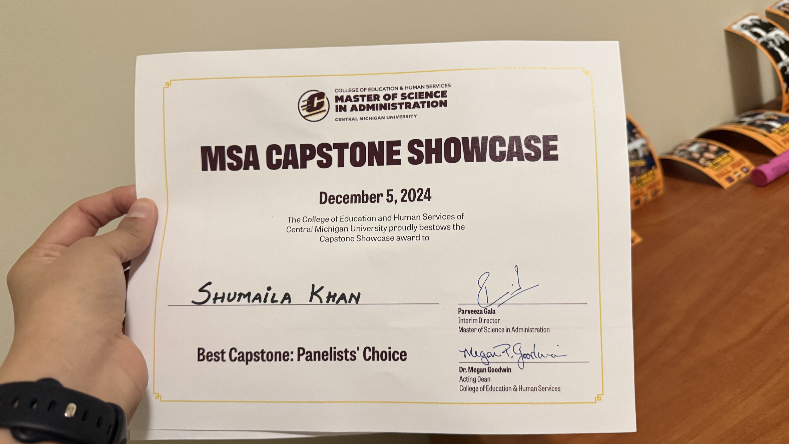
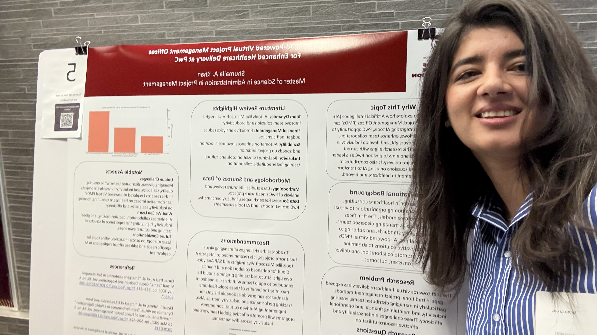

Professional Portfolio


Hello! I am Shumaila A. Khan, a systems‑driven project and operations professional with experience across healthcare, education, and manufacturing environments.


My award‑winning capstone explored AI‑enabled Virtual PMOs to improve healthcare delivery using PwC hybrid models.
SQL
Power BI
Python
ERP
Leadership
Automation
Email: shumsark@gmail.com
Phone: +1 (989) 621‑2662